欧游札记之徜徉法兰西(DAY2.1卢浮宫)
DAY 2.1 卢浮宫
经过一晚饱睡的休整，我们满血复活地开启了第二天的行程“卢浮宫-圣母院-奥赛博物馆-罗丹美术馆”，有了第一天凡尔赛宫排队的经验教训，我们一大早就赶地铁从M14线转M7线到了卢浮宫外（实际上因时差原因4、5点钟已经睡醒，赖床了一阵才吃早餐出发）。卢浮宫早上9点开门，我们8点30多赶到的时候就远远就望见贝聿铭设计的玻璃金字塔主入口处已经排了一百多米长的队伍了，幸好提前做了功课知道旁边黎塞留宫还有另一个入口，于是排了十分钟不到就直接通过安检用通票进入卢浮宫了。进去后才发现很多从金字塔主入口进来的游客仅仅只是完成了安检手续而已，到地下大堂后还要买票才能进入卢浮宫的三大宫殿“德农宫、苏利宫、黎塞留宫”。我们原以为能仗着通票、底气足可以想去哪去哪，结果马上就遇到了选择性难题“都能去，但先去看哪个宫？”。踌躇之际还是LP一拍脑袋做了决定“先去看蒙娜丽莎！”，而蒙娜丽莎的微笑在德农宫，所以我们就误打误撞的先奔德农宫去了，而事后证明这一决定英明无比，因为德农宫主要是展出大师级的油画、雕塑等艺术品，苏利宫主要陈列古埃及文物而黎塞留宫主要是展示历代帝王的寝宫等，而且从参观时间长短上来说，我们在德农宫上窜下跳辗转折腾了将近2个小时的时间才算基本逛完，只剩下一个多小时只能走马观花地把苏利宫和黎赛留宫的最重要馆藏匆匆过了一下而已。（TIPS：参观卢浮宫，德农宫必须留够时间，建议提早了解相关藏品的背景资料，尤其是在没有中文语音解说和任何英文说明文字的情况下。）
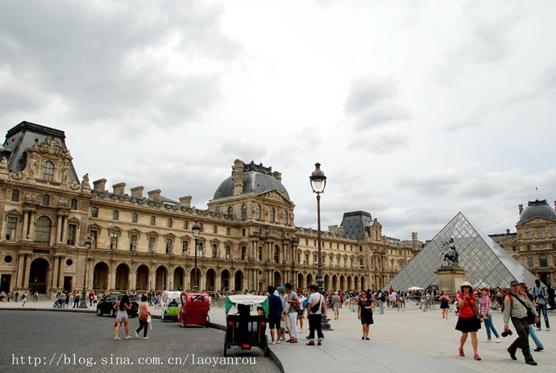
为了尽早一睹卢浮宫镇馆之宝“蒙娜丽莎的微笑”，我们在身边人潮和德农宫墙上箭头的双重指引下一分钟也没耽搁直奔主题而去，只记得爬上一个旋转楼梯、穿过两旁林立着白色大理石雕塑的巨型长厅，绕过一二层之间楼梯平台上的胜利女神雕像，走进一间巨型拱顶画廊旁边的六号小厅，终于在已聚集的不少攒动的人头前面见到了蒙娜丽莎真容，被一层厚厚的防弹玻璃隔着，加上外围相隔几米双重护栏隔离保护，总算暗自松下一口气“原来也不过如此而已！”。不知是由于距离还是被多重玻璃隔离抑或是年代久远的缘故，蒙娜丽莎的本尊从油画上看显得黯淡无光、平平无奇，以我们当时的观感来说实在看不出所谓殿堂级人像画的神韵或达芬奇大师画工的鬼斧天工之处，不过由于绝大多数人没有机会也没有可能毫无遮拦地近距离观赏这幅号称达芬奇最高艺术成就的名画，所以所谓的失落只能归咎于我们这些市井小民见识浅薄、艺术修为不够吧，但聊以慰藉的是我们好歹也在这幅世界名画前朝圣般观赏了几分钟并留影为念了。（PS：据说蒙娜丽莎的微笑在海外巡展时每人只能在画前观看3秒钟而已！）
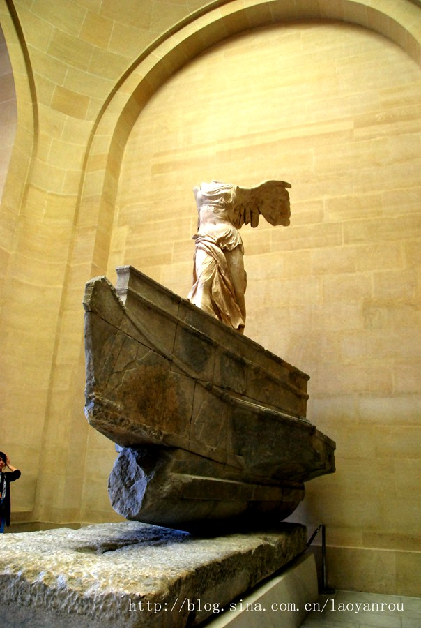
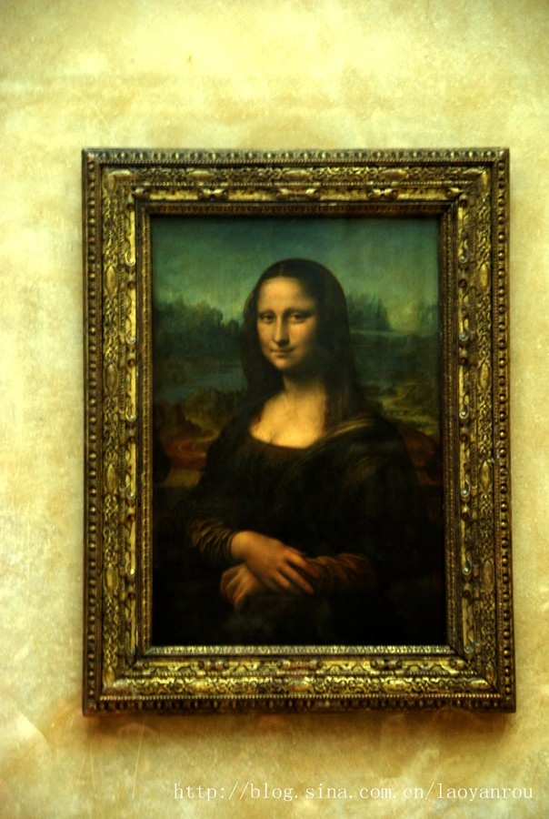
既然说到达芬奇，不得不说起他生命最后几年被瓦洛亚王朝法兰西斯一世邀请赴法一事。在那个动乱时代，法国四代君主（查理八世、路易十二、法兰西斯一世、亨利二世）对意大利的连年征伐尽管残酷，但却极大推动了意大利文艺复兴对法国人文主义思想的影响，同时也促成了意大利著名的博学家、艺术家达芬奇受邀到法国居住，据说他临终都是死在了“法兰西文艺之父”法兰西斯一世的怀中。可以说，不管时局如何动荡，法国人上自国王下至百姓对艺术与文化的痴迷和热爱吸引了当时无数世界著名的艺术家和文艺工作者来此讲学发展，包括后来荷兰凡高、西班牙毕加索、美国海明威等等，终究成就了法国巴黎“世界文艺之都”的美名，也当之无愧地拥有了我们后来在卢浮宫参观所看到其他包括意大利米开朗琪罗的《奴隶》、希腊的《维纳斯》和《胜利女神像》、大卫《约瑟芬的加冕》、席里柯的《美杜莎之筏》、埃及的《埃及书吏》等庞大的艺术瑰宝馆藏（部分藏品来源可能不太光彩，如苏利馆的古埃及文物或者某些中国文物等，我个人始终坚持认为 “虽然艺术虽无国界，但艺术品应该是有国界的”）。
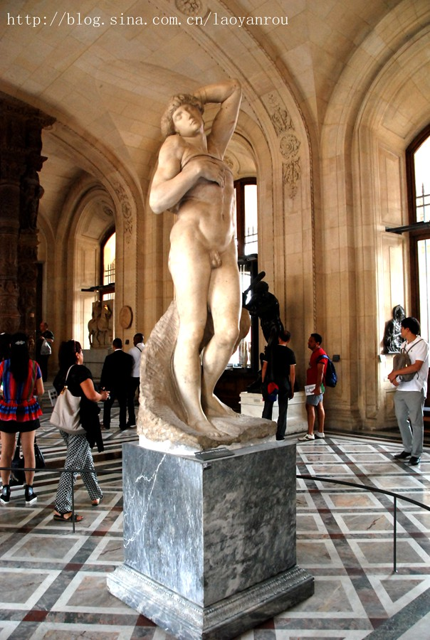
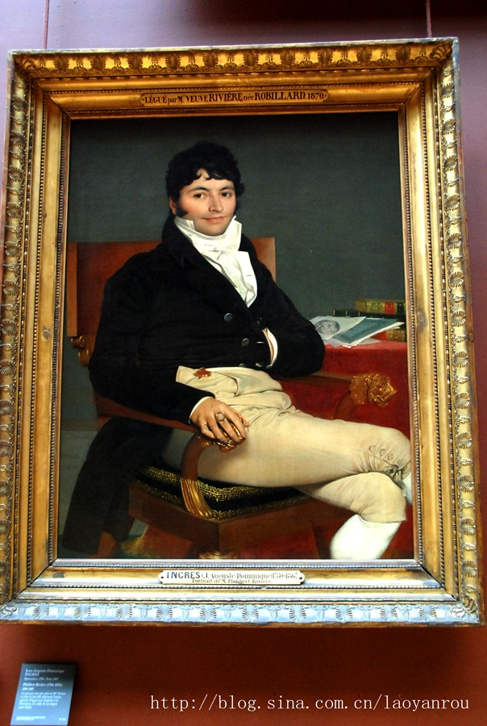
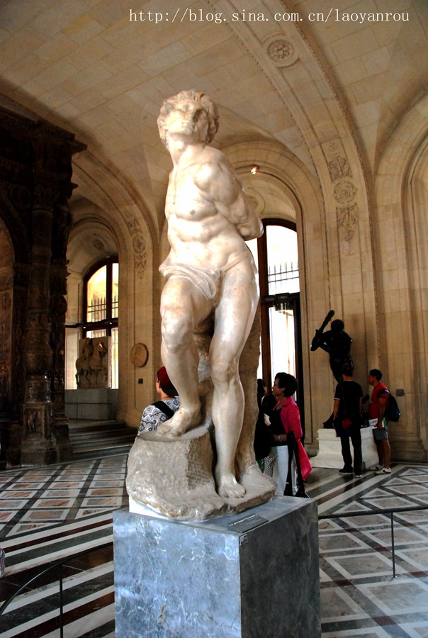
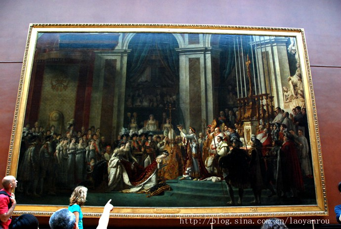
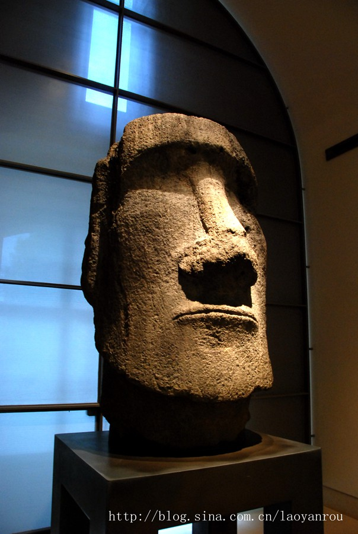
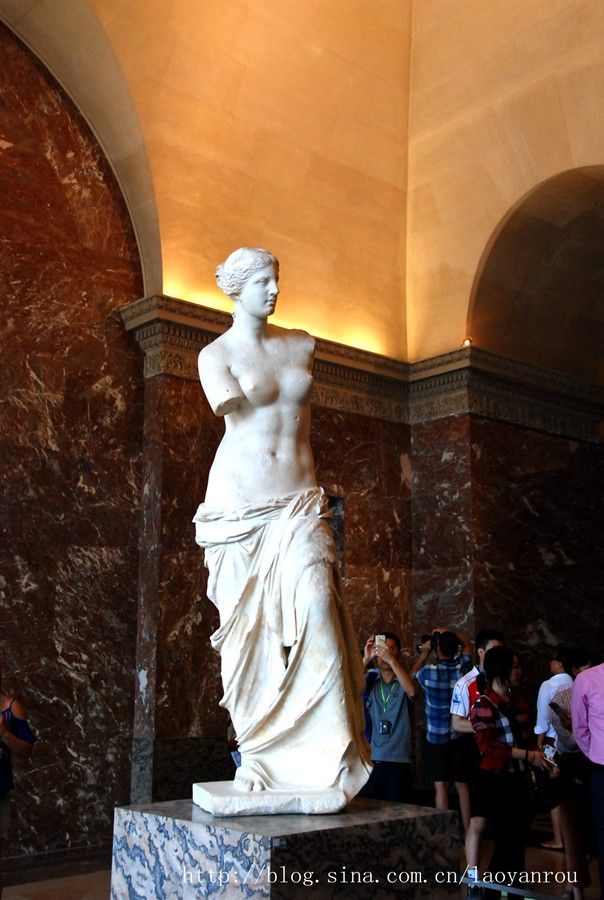
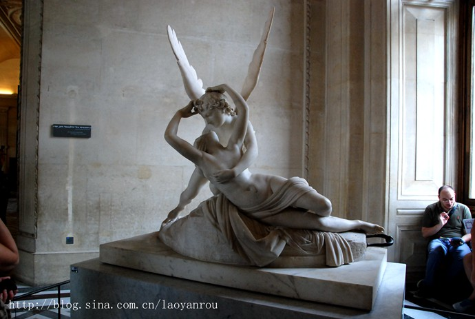
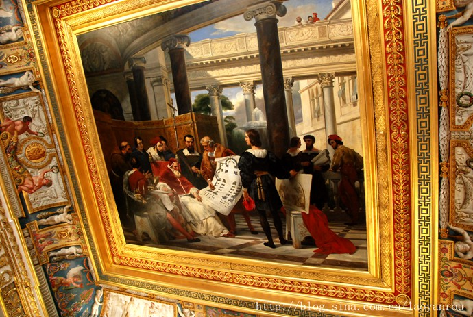
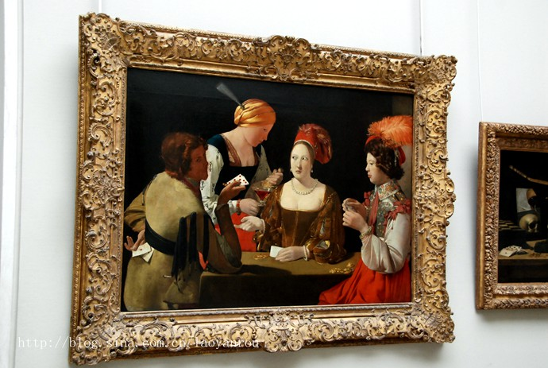

参观完德农宫的藏品后，匆匆对苏利馆琳琅满目的古埃及文物投上一瞥并在黎塞留馆的马利骏马群雕像前驻足观赏了一会便离开了卢浮宫，一方面是看不太懂苏利馆的埃及文物并兼怀有一丝“非礼勿视”的抗拒心理，另一方面受凡尔赛宫的影响对黎塞留馆的皇帝寝宫之类的也有点审美疲劳了。
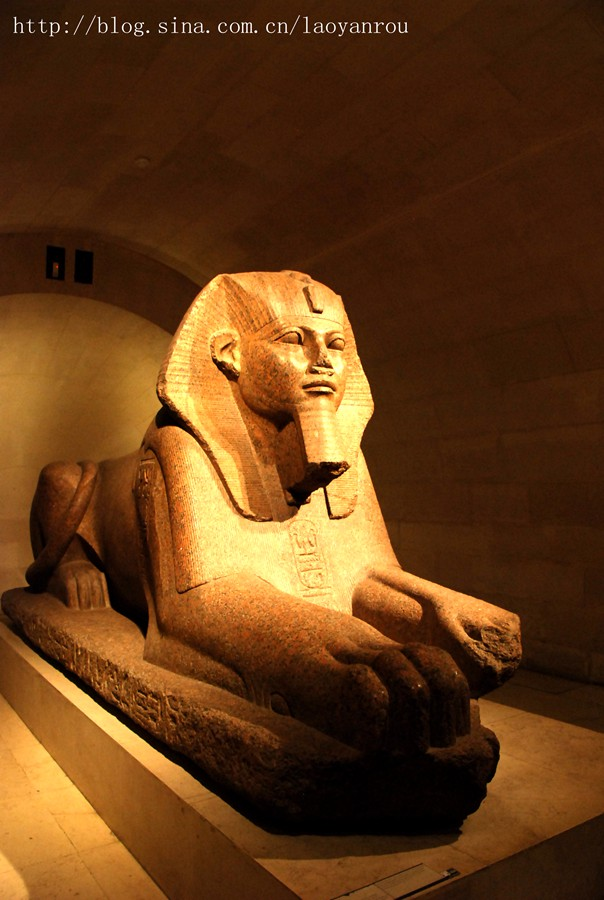
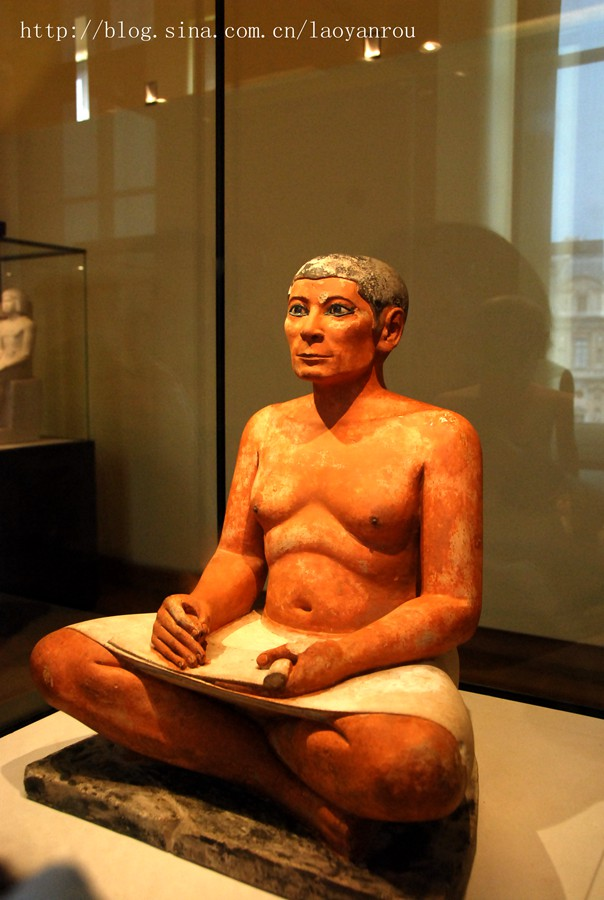
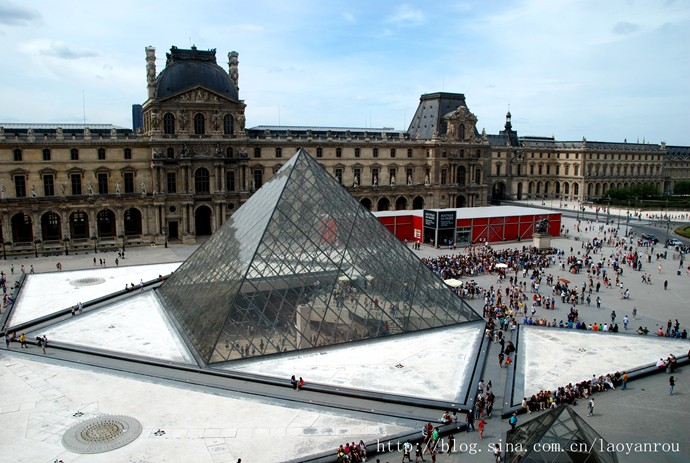
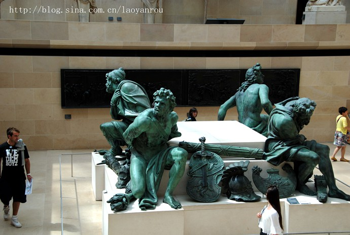
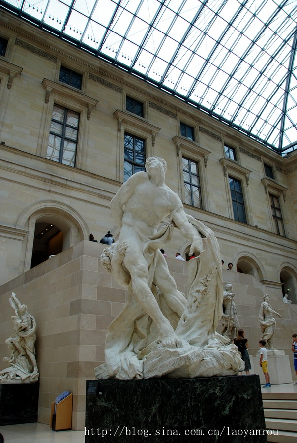
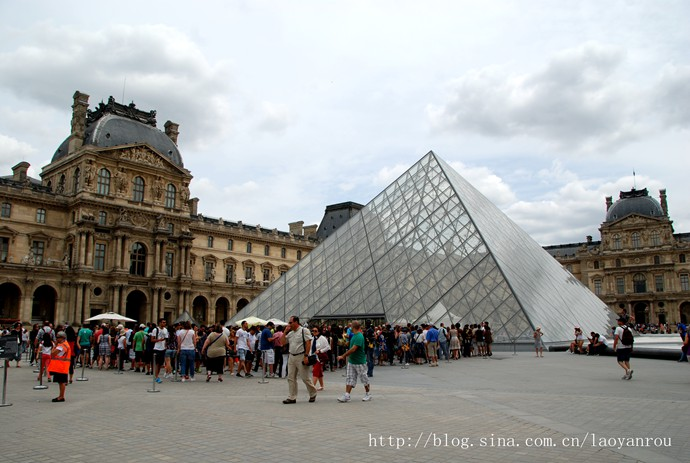